Data publicării: 12.07.2018
Autor articol: Adrian Iftene
Introducere
Privind în urmă, realitatea augmentată (Augmented Reality, AR) poate fi urmărită până în anii 1960. Cu toate acestea, realitatea augmentată pentru dispozitive mobile este relativ nouă, dar se dezvoltă foarte repede. Primele aplicații AR pentru browsere denumite Junaio, Layar și Wikitude au fost dezvoltate între 2008 și 2010.
Odată cu apariția iPhone 3G, care a avut senzorii necesari și mai multă putere de calcul, AR a devenit interesantă pentru piața masivă în 2009. După aceea, companii precum Metaio, Total Immersion și Qualcomm au fost realizatori și furnizori de software pentru SDK-uri de realitate augmentată, care au fost distribuite pe bază de licență altor dezvoltatori. În Figura 1 este un exemplu de aplicație construit cu ajutorul Qualcomm Vuforia: Big Bird’s Words.
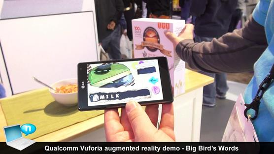
Producătorul de Firefox, Mozilla, a anunțat lansarea Firefox Reality, un nou browser pentru setul de căști pentru realitate augmentată și realitatea virtuală (vezi Figura 2). Browserul va utiliza noile standarde de web pentru realitate mixtă, pentru a permite utilizatorilor să experimenteze jocuri și experiențe imersive, fără a fi nevoie să instaleze aplicații personalizate (Roettgers, 2018).
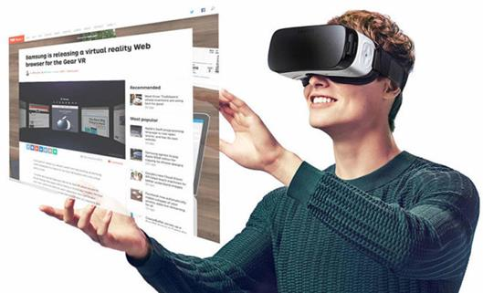
“Noi credem că viitorul web va fi puternic interconectat cu realitatea virtuală și realitatea augmentată și că viitorul va trăi prin browsere”, a explicat Sean White, ofițer al diviziei de cercetare și dezvoltare a Mozilla, într-un post pe blogul său. “Viitorul realităților mixte este de a oferi experiențe, nu de a construi aplicații. Trecerea de la o experiență la alta ar trebui să fie cât mai simplă.”
White nu a specificat când Firefox Reality va fi disponibilă pentru utilizatorii obișnuiți. White a promis suportul pentru o mare varietate de dispozitive, iar un purtător de cuvânt al Mozilla a adăugat că browserul va fi disponibil pe HTC Vive Focus și alte căști suportate de platforma HTC Vive Wave VR la lansare, cu adăugarea de suport pentru dezvoltatori pentru alte dispozitive Qualcomm, inclusiv Daydream și Gear VR (vezi Figura 3 de mai jos). Echipa lucrează, de asemenea, la o implementare pentru ochelarii AR de la ODG și face parte din programul de acces rapid al Magic Leap.
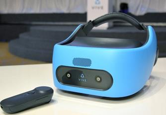
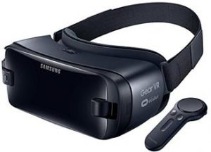
Jocuri ce folosesc realitatea augmentată
Realitatea augmentată oferă posibilitatea creării unor jocuri interactive, bazate pe mediul înconjurător în care ne aflăm (Hindy, 2018), (Sokhanych, 2018), (Reed, 2018) și (Jansen, 2018). Multe din ele au început să fie disponibile pentru dispozitive cu Android, dar mai recent au început să fie disponibile și pentru iOS.
Brickscape este un joc de puzzle 3D, disponibil pe Android. Jucătorii mișcă diverse blocuri din interiorul unei casete. Scopul este de a muta piesa de bază în centru. Este un joc relativ simplu, ce nu necesită neapărat un fundal regulat. Versiunea AR ne permite să jucăm jocul prin camera noastră. Ca cele mai multe jocuri AR, este o idee amuzanta, dar nu este ceva serios sau profund.
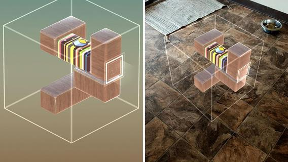
Crime Scene realizat de către cei de la A&E este un joc pentru fanii anchetatorilor de pe scena crimei. Este similară aplicațiilor din acest gen, fiind inspirată din serialele de televiziune First 48 și Crime 360. Jocul ne permite să investigăm scena crimei similar cu serialele. Utilizează realitatea augmentată pentru a ne permite să căutăm în jur și să găsim indicii și lucruri similare. Există șase scenarii diferite de joc. Jocul necesită Google ARCore, adică necesită o descărcare și instalare în prealabil a acestei aplicații. De asemenea, aveți nevoie de un dispozitiv compatibil.
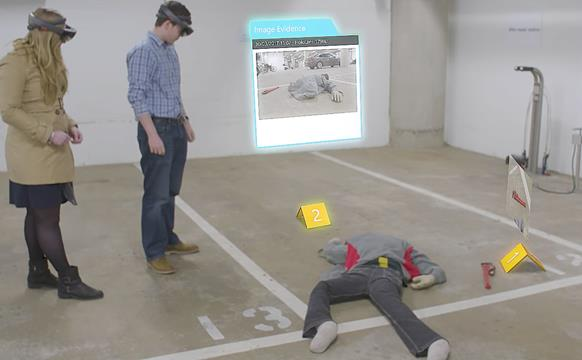
Egg, Inc este un joc de cultivare bazat pe click-uri. Putem construi o fermă, putem colecta resurse și putem actualiza bunurile pe care le avem. Jocul este bazat pe scenarii și nu este nevoie de prea multă gândire. Cea mai mare parte a jocului are loc pe telefon și există câteva elemente de AR. Utilizează de asemenea Google ARCore pentru elementele de realitate augmentată (vezi în Figura 6 elementele de realitate augmentată).
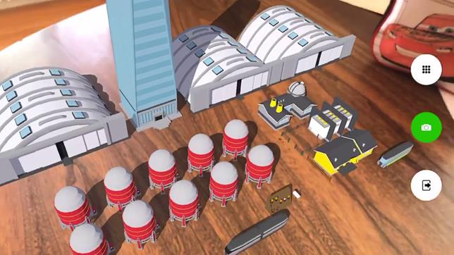
Ingress a fost unul dintre primele jocuri AR foarte bune pe Android. A fost dezvoltat de Niantic și a avut un succes imens de prima dată când a apărut. Modul în care funcționează face să te ducă din lumea reală prin intermediul portalurilor spre nivelurile următoare. Scopul este ca o echipă să construiască portaluri care s-o ajute pe ea și s-o încurce pe echipa cealaltă. Faptul că sunt două echipe care concurează îl face distractiv și provocator, fiind o alternativă la Pokemon Go. În Figura 7 putem vedea o scenă din joc.
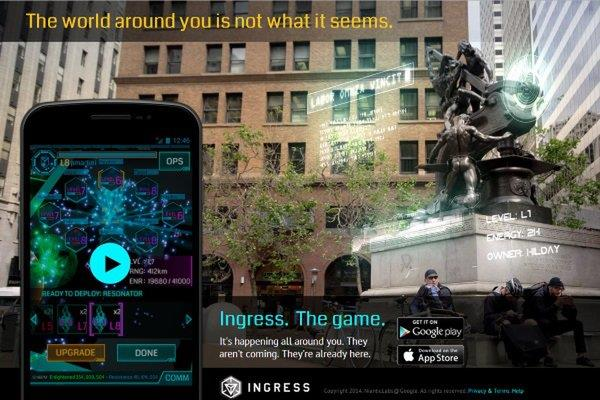
Knightfall AR este un alt joc AR conceput de către cei de la A&E. Ca și jocul anterior, acesta este un joc scurt, care se dorește mai mult o confirmare a unui concept. Este în esență un joc de tip bord game pe care îl putem juca cu ajutorul dispozitivul mobil. Trebuie să găsim o suprafață plană pe care jocul să se poată desfășura. Este nevoie de un pic de antrenament pentru a ne obișnui cu controalele, dar este o metodă foarte bună de a folosi ARCore pentru jocuri. Are câteva probleme, dar este complet gratuit, fără a necesita achiziții contra cost.
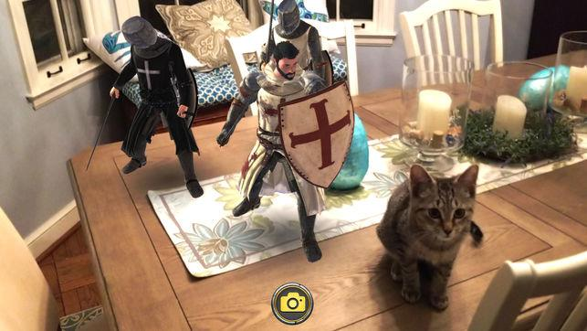
My Tamagotchi Forever este unul dintre cele mai noi jocuri de AR. Este de fapt doar o versiune modernizată a vechilor jucării Tamagotchi din anii ’90. Creșteți un animal mic, jucați-vă cu el, hrănindu-l și purtându-i de grijă (vezi Figura 9). Jocul oferă, de asemenea, diverse personalizări și alte opțiuni. Elementele AR din acest joc nu fac parte din funcționalitățile de bază. Acestea ne permit să explorăm un oraș cu ajutorul AR. Multe jocuri pentru dispozitivele mobile vor folosi metode ca aceasta în viitor, în care doar anumite părți ale jocului utilizează realitatea augmentată. Acesta este un joc gratuit, dar utilizatorii par să-l placă oricum.
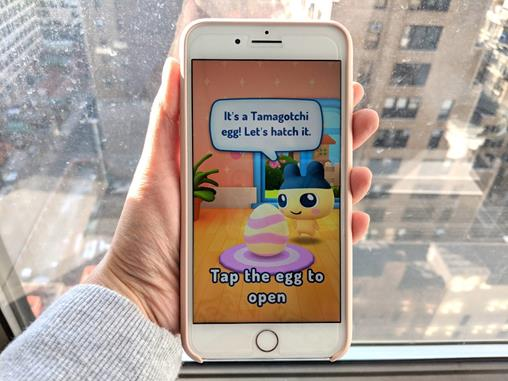
Pokémon Go este un joc pentru dispozitive mobile gratuit, bazat pe realitate augmentată. Jocul permite să capturăm, să ne luptăm și să antrenăm creaturi virtuale, denumite Pokémon, vom putea vizualiza PokéStops și vom lupta cu adversarii într-o locație de tip Gyms (vezi Figura 10). Jocul este în continuă dezvoltare, multe din elementele sale evoluând în timp. Cu toate că este gratuit, jocul permite achiziția de componente adiționale ce oferă funcționalități suplimentare pentru jucători. De exemplu, un dispozitiv adițional numit Pokémon Go Plus, ne poate alerta atunci când suntem în apropiere unui Pokémon sau PokéStop. Interesant este faptul că de pe 5 august 2016 în Iran s-a interzis jocul din motive de securitate, iar în Indonezia li s-a interzis polițiștilor să joace acest joc în timp ce sunt la servici.
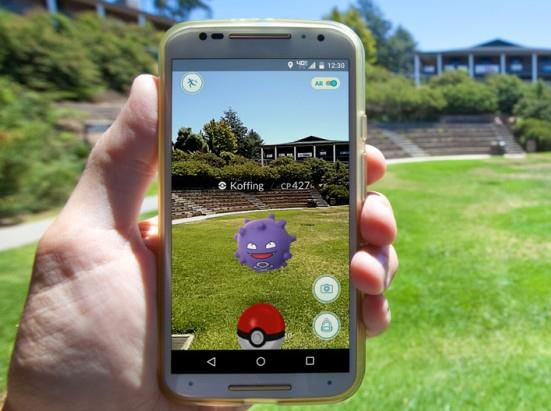
Slingshot Island AR Core este un joc de distrugere a unui turn, similar în mecanica de desfășurare cu jocul Angry Birds. Putem lansa diverse obiecte cu scopul de a distruge diverse tipuri de turnuri. Pe parcursul desfășurării jocului vom putea obține o varietate mare de arme, totul în cadrul unei experiențe distractive AR, cu 30 de niveluri de joc. Această aplicație necesită Google ARCore, asta însemnând implicit faptul că avem nevoie de un dispozitiv mai nou, compatibil pentru a putea juca.
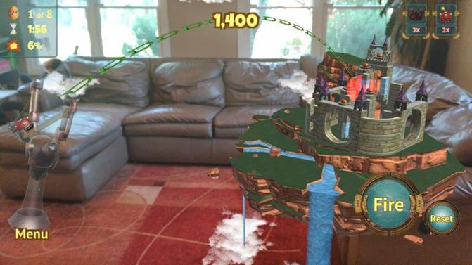
WobblyStack este o versiune a jocului Jenga pentru dispozitive mobile (vezi Figura 12). Jocul utilizează senzorii de mișcare și camera pentru a scoate blocurile din teanc și a le pune deasupra. De asemenea, oferă feedback haptic pentru controale mai avansate. Nu este perfect, dar este o versiune destul de bună a jocului original. Există, de asemenea, posibilitatea de a juca în opțiunea multiplayer pentru a recrea atmosfera jocului inițial.
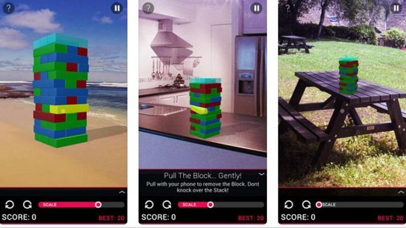
Zombies, Run este un joc pentru fitness, ce se dorește a fi un joc de aventură audio imersiv. Modul în care funcționează începe cu faptul că te duci într-o plimbare sau să alergi. În timp ce mergi, vei debloca diferite părți ale povestirii. Drama jocului ne va implică într-un mod creativ care ne va motiva să continuăm exercițiile. Jocul va funcționa chiar și pe benzile de alergare în cazul în care nu dorim să ieșim afară. Este un joc popular și ne va ajuta să rămânem în formă. Este gratuită pentru descărcare și utilizare, dar putem plăti bani pentru opțiunile suplimentare dacă dorim acest lucru.
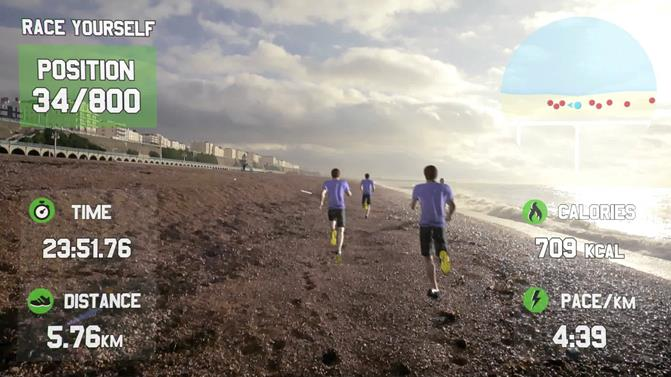
Jocuri web ce folosesc realitatea augmentată
WebAR-Playground este o aplicație dezvoltată pe baza librăriei AR.js ce permite adăugarea elementelor de realitate augmentată în browser. Odată cu deschiderea aplicației avem acces la un meniu din care putem selecta diferite modele 3D. Modelele pot fi mutate, redimensionate și rotite. Primul pas în utilizarea aplicației este învățarea suprafeței pe care sunt amplasate marcatoarele (Figura 13). În Figura 13 avem obiectul Minecraft Batman, care apare și în meniu deasupra butonului Current Object ce reprezintă lista obiectelor deja adăugate. Odată ce reușim să inserăm obiectele și să ne jucăm cu ele, putem opta să le salvăm, și putem obține un link pe care îl putem distribui prietenilor. Cine accesează acel link poate vedea ce am construit și poate adăuga mai departe elemente noi.
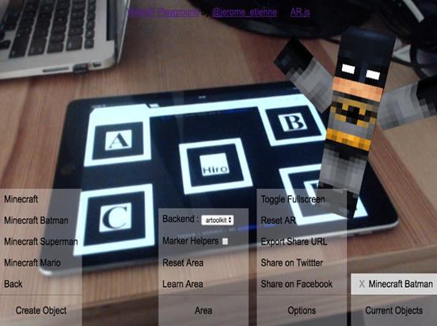
Stack It AR este un joc bazat pe realitate augmentată disponibil atât pe Android cât și pe iOS (vezi Figura 14). Jocul are ca scop construirea unui turn cât mai înalt, punctele primite fiind în funcție de înălțimea la care am ajuns. După selectarea suprafeței de joc, apare prima formă. În continuare apare următoare formă ce se mișcă perpendicular cu cea amplasată deja. Dacă a doua piesă nu este poziționată perfect deasupra celeilalte, o bucată din ea se rupe, iar următoarea piesă este mai mică și mai greu de amplasat. Jocul se termină în momentul în care piesa devine foarte mică și nu mai poate fi poziționată.
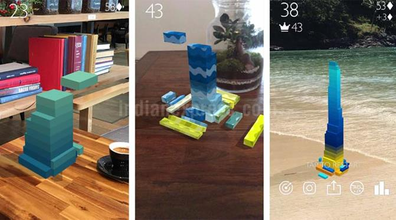
Genesis Augmented Reality este pentru fanii creaturilor mitice. Cu ajutorul realității augmentate o întreagă lume nouă apare în fața ecranului (vezi Figura 15). Aplicația ne permite să jucăm oriunde am fi, atâta timp cât avem planșa de bază, care poate fi descărcată, listată sau afișată pe orice dispozitiv. Prima dată când deschidem aplicația trebuie sa completăm un tutorial, să ne înregistrăm cu Facebook și să urmăm instrucțiunile pentru a înțelege regulile și modul în care se controlează caracterul. Pe ecranul principal al jocului sunt patru butoane, dintre care trei pentru abilități speciale și unul pentru atac normal. Din meniul principal putem alege unul dintre cele opt personaje: Alatus, Aurora, Erebus, Baron, Osirus, Tyran, Mephisto și Ronin. Fiecare personaj are propria poveste, propriul echipament și propriile abilități. Mișcările personajului sunt controlate cu joystick-ul amplasat în partea din stânga jos a ecranului.
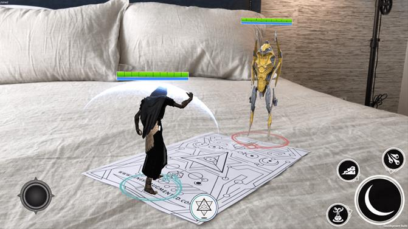
Concluzii
Realitatea augmentată este folosită în multe jocuri pentru dispozitive mobile cu Android și iOS. În unele din ele realitatea augmentată este componenta principală, dar jocurile sunt simple, fiind realizate doar cu scopul de a exploata capabilitățile AR. În alte jocuri, componenta de realitate augmentată este doar o componentă secundară ce permite accesul la anumite funcționalități suplimentare. Multe din aceste jocuri se doresc a fi variante simplificate ale unor jocuri clasice, dar introduc elemente noi, care permit utilizatorului să iasă din casă și să exploreze natura.
Jocurile AR disponibile în browser au avantajul că nu necesită resurse hardware și software suplimentare pe dispozitivele utilizatorilor. Ele sunt accesibile prin intermediul unui link și pot fi foarte ușor partajate către prietenii noștri.
Deoarece, multe jocuri cu AR sunt acaparatoare făcând utilizatorii să fie implicați total pe perioade mari de timp, s-a ajuns la situații în care au fost interzise în anumite țări sau la serviciu, iar copiii au nevoie de acordul părinților pentru a le putea instala.
Referințe bibliografice
- Hindy, J. (2018) 10 best augmented reality games and AR games for Android. Android Authority. http://www.androidauthority.com/best-augmented-reality-games-ar-games-android-755298/
- Jansen, M. (2018) Escape reality with the best augmented reality apps for Android and iOS. Digital Trends. Mobile. http://www.digitaltrends.com/mobile/best-augmented-reality-apps/
- Reed, C. (2018) The 8 best augmented reality games to play on mobile right now. The Daily Dot. http://www.dailydot.com/parsec/augmented-reality-games-mobile/
- Roettgers, J. (2018) Mozilla Announces Firefox Reality, a Dedicated Browser for VR and AR Headsets. Variety. Digital News. http://variety.com/2018/digital/news/mozilla-firefox-reality-ar-vr-browser-1202742143/
- Sokhanych, A. (2018) 25 Best Augmented Reality Games 2018 for Android and iOS. ThinkMobiles. Blog. http://thinkmobiles.com/blog/best-augmented-reality-games/